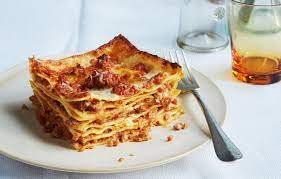

Lasagna

Delicious Homemade Lasagna Recipe
Lasagna is a classic Italian comfort food made by layering wide pasta sheets with a rich meat sauce, creamy béchamel or ricotta cheese, and plenty of melted mozzarella. This hearty dish is baked until golden and bubbly, making it perfect for family dinners, gatherings, or a cozy night in.
In this recipe, we combine seasoned ground beef and tomato sauce with layers of pasta and cheese to create a mouthwatering, oven-baked masterpiece. Whether you're new to cooking or a kitchen pro, this lasagna is simple to follow and guaranteed to impress. Serve it with a side of garlic bread and a fresh salad for the ultimate homemade meal.
Ingredients
- 12 lasagna noodles
- 1 pound ground beef
- 1 small onion, diced
- 2 cloves garlic, minced
- 24 oz (680g) marinara or pasta sauce
- 15 oz (425g) ricotta cheese
- 2 cups shredded mozzarella cheese
- 1/2 cup grated Parmesan cheese
- 1 egg
- 1 tablespoon olive oil
- Salt and pepper to taste
- Fresh basil or parsley for garnish (optional)
Steps In Making The Recipe
- Preheat your oven to 375°F (190°C).
- Cook the lasagna noodles according to package instructions. Drain and set aside.
- In a large skillet, heat olive oil over medium heat. Add diced onion and garlic; sauté until fragrant.
- Add the ground beef to the skillet. Cook until browned, then drain excess fat.
- Stir in the marinara or pasta sauce. Simmer for about 10 minutes, then season with salt and pepper.
- In a mixing bowl, combine ricotta cheese, egg, and half of the Parmesan cheese. Mix well.
- In a baking dish, spread a thin layer of the meat sauce on the bottom.
- Layer 3–4 noodles over the sauce, then spread a layer of the ricotta mixture, followed by meat sauce, and then a layer of mozzarella.
- Repeat the layers until all ingredients are used, ending with a layer of meat sauce and mozzarella on top. Sprinkle with remaining Parmesan cheese.
- Cover with foil and bake for 25 minutes. Then remove the foil and bake for another 15–20 minutes until the top is golden and bubbly.
- Let the lasagna rest for 10–15 minutes before serving. Garnish with fresh basil or parsley if desired.
Home